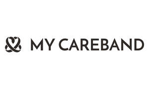

Trade Mark Journal No.2026/005 30 January 2026
UK00004323725 14 January 2026 (9,20,42,44,45)

- Class 9
- NFC / RFID wristbands and wearable devices; QR-enabled tags and identifiers; Electronic data storage devices; Downloadable mobile applications; Emergency information access systems; Software for medical and care information retrieval; Software applications for mobile devices; Software applications for use with mobile devices; Software and applications for mobile devices; Multimedia devices; Application software for wireless devices; Wearable digital electronic communication devices; Application software for mobile devices; Electric mobile digital communication devices; Wireless communication devices; Information technology and audio-visual, multimedia and photographic devices; Downloadable mobile applications for use with wearable computer devices; Software related to handheld digital electronic devices; Electronic game software for wireless devices; Handheld communication devices; Computer software for mobile applications that enable interaction and interface between vehicles and mobile devices; Business technology software; Wristband computer devices; Downloadable applications for use with mobile devices; Downloadable applications for mobile devices; Information technology and audiovisual equipment; Electronic device software drivers that allow computer hardware and electronic devices to communicate with each other; Network communication devices; Personnel tracking devices; Software for smartphones; Watchbands that communicate data to other electronic devices; Software for mobile phones; Electronic memory devices; Wearable digital electronic devices capable of providing access to the Internet; Information storage devices [electric or electronic]; Application software for smart phones; Data storage devices and media; Computer software for mobile phones; Wireless communication devices for the transmission of multimedia content; Computer software to enhance the audio-visual capabilities of multimedia applications; Computer application software for mobile phones; Data storage devices; Platform software; Collaboration software platforms [software]; Application software for cloud computing services; Collaboration management software platforms; Computer software platforms; E-commerce software; Software; Software development tools; Revision control platforms [software]; Middleware for management of software functions on electronic devices; Access security apparatus (Automatic -); Access security apparatus (Electric -); Software to control building environmental, access and security systems; Biometric access control systems; Computer programs for the enabling of access or entrance control; Computer programs for enabling access or entrance control; Access control devices; Internet access software; Safety, security, protection and signalling devices; Security software; Electronic security systems for home network; Biometric identity cards; Identity cards, encoded; Encoded identity cards; Character verification apparatus; Electronically encoded identity wristbands; Computer software for biometric systems for the identification and authentication of persons; Electronically encoded identity bracelets; Biometric identification systems; Cards encoded with security features for identification purposes; Coded identification cards; Biometric identification apparatus; Security token hardware for user authentication; Authentication software; Electronic identification cards; Radio-frequency identification (RFID) readers; Radio-frequency identification (RFID) tags; Encoded identification bracelets, magnetic; Bracelets (Encoded identification -), magnetic; Identification bracelets (Encoded -), magnetic.
- Class 20
- Identification tags, not of metal.
- Class 42
- SaaS platforms for storing and retrieving medical/social care data; Secure cloud-based data hosting; User-managed and professional-tier access systems; Software development and licensing; API access for emergency services / care providers; Design of software for embedded devices; Design and development of computer software for use with medical technology; Updating of software for embedded devices; Information technology services for the pharmaceutical and healthcare industries; Information technology services; Design and development of medical technology; Software consultancy services; Software customisation services; Hosting services, software as a service, and rental of software; Software development services; Software as a service [SAAS] services; Software consulting services; Software maintenance services; Software engineering services; Software as a service; Application service provider (ASP) services, namely, hosting computer software applications of others; Computer software consulting services; Consultancy services relating to software used in the field of e-commerce; Software as a service [SaaS] featuring software for deep learning; Software engineering services for data processing; Platforms for artificial intelligence as software as a service [SaaS]; Consultancy and information services relating to the design, programming and maintenance of computer software; Application service provider [ASP], namely, hosting computer software applications of others; Services for the writing of computer software; Platform as a Service [PaaS]; Platform as a service [PaaS]; Design of printed material; Graphic design of promotional materials; Computer security services for protection against illegal network access; Authentication services for computer security; Data security services [firewalls]; Provision of security services for computer networks, computer access and computerised transactions; Data security services; Maintenance of software for Internet access; Computer security system monitoring services; Installation and maintenance of Internet access software; Installation of Internet access software; Monitoring of computer systems by remote access; Data authentication via blockchain; Authentication services; Providing user authentication services using biometric hardware and software technology for e-commerce transactions.
- Class 44
- Medical information services; Emergency preparedness services; Health assessments and care planning; Patient information services; Support for carers, families, and vulnerable users; .
- Class 45
- Licensing of technology; Identity verification; Identity validation services; Providing authentication of personal identification information [identification verification services].
Kelly Thompson